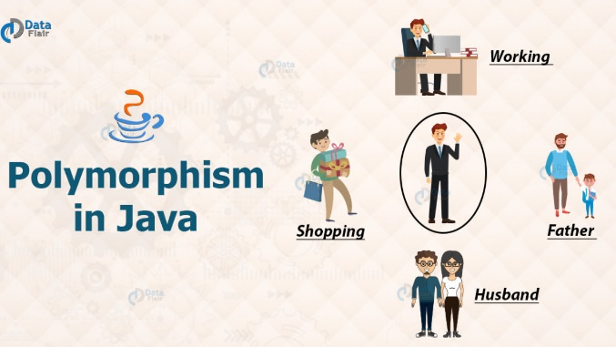
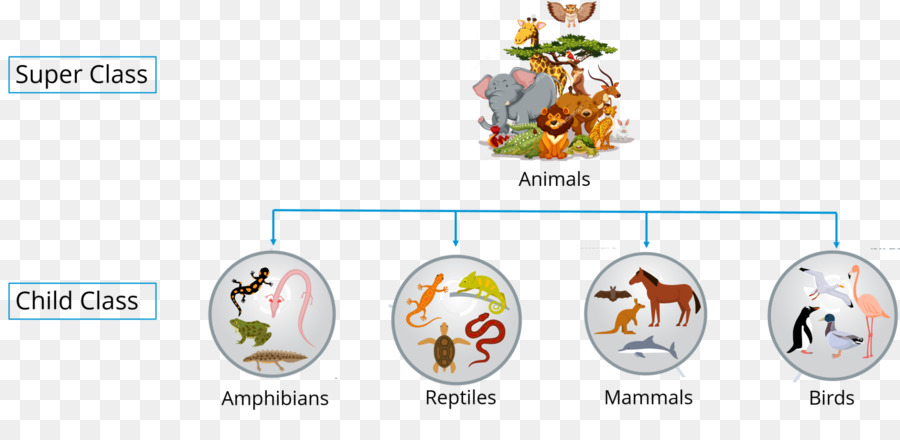
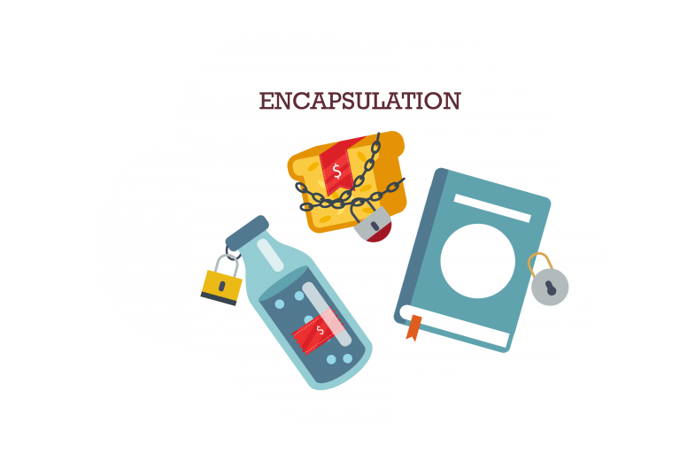
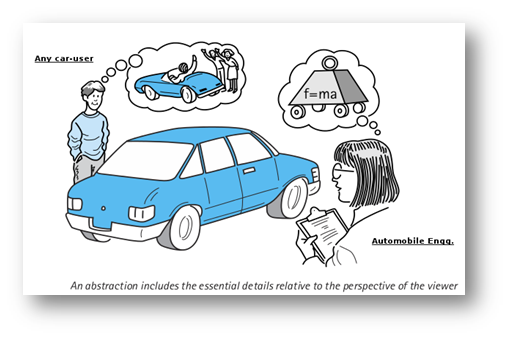
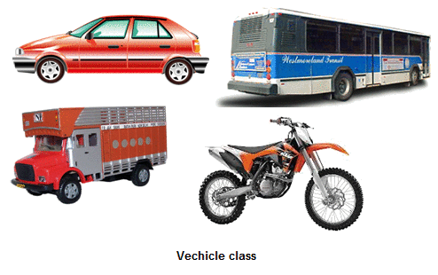
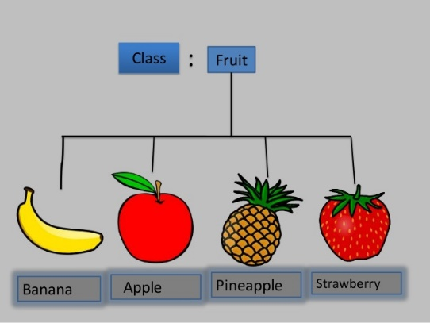
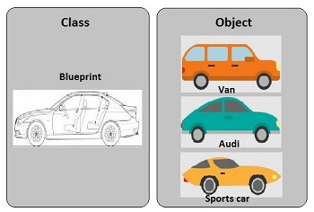
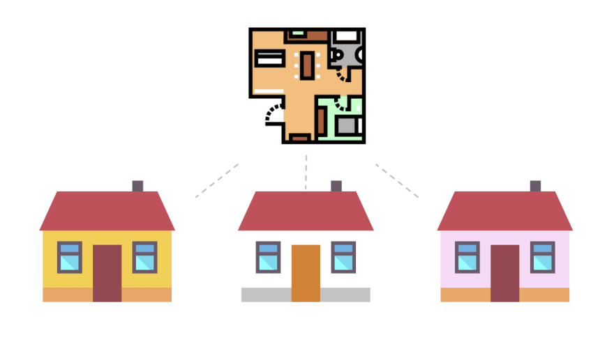

INFORMACIÓN GENERAL DEL ESPACIO ACADÉMICO | |||
Unidad académica/administrativa | Facultad de Ingeniería | ||
Programa(s) | Ingeniería de Software | ||
Nombre del espacio académico | Lenguaje de Programación I | Código | |
Créditos | 2 | ||
Asesor(a) tecnopedagógico (a) | |||
Adecuador(a) pedagógico(a) (lo completa DEE) | |||
Fecha elaboración | 11/01/20 | ||
Fecha actualización | |||
Autor(es) del diseño del espacio académico (modalidad e-learning) | |||
Nombres y Apellidos | Carolina Peña Ortega | ||
Documento de identidad | 34326280 de Popayán | ||
Perfil profesional (máx. 200 palabras) de cada autor | Carolina Peña-Ortega adelantó estudios de Magister en Ingeniería Eléctrica en la Universidad de Puerto Rico, Puerto Rico en 2010, con beca otorgada por La Universidad de Puerto Rico. Así mismo, curso estudios de Ingeniería de Automatización en la Universidad del Cauca, Colombia en 2006. Actualmente es profesora de la Facultad de Ingeniería de la Universidad de La Salle, Bogotá, Colombia, cargo desempeñado desde agosto de 2014. En el 2018 participó en el proyecto de investigación Planeación de Trayectorias Automáticas con el Robot HP20D para tareas Industriales. Desde enero del 2021 está trabajando en el proyecto de investigación Red de Sensores Inteligentes para el Monitoreo y Control del Compostaje, Derivado del Estiércol de Gallina en el CIC (Centro de Investigación y Capacitación), San Miguel. Ha participado en diferentes congresos académicos y ha publicado varios artículos científicos en su campo de interés. Su interés de investigación incluye el desarrollo de algoritmos en diferentes lenguajes de programación, procesamiento digital de señales e imágenes y manejo de TIC’s (Tecnologías de Información y Comunicación). | ||
Link al CVLAC (hoja de vida en línea) | https://scienti.minciencias.gov.co/cvlac/visualizador/generarCurriculoCv.do?cod_rh=0001540250 | ||
Foto del perfil | |||
Datos de contacto (Incluya los datos de contacto que pueden ver sus estudiantes para habilitar la comunicación) | |||
Correo electrónico | |||
Otros datos de contacto | Teléfono: 353 5360 Ext: 2579 - 2583 (Programa de Ingeniería Industrial) | ||
METODOLOGÍA DE APRENDIZAJE DEL ESPACIO ACADÉMICO (redacción dirigida al estudiante)
El espacio académico Lenguaje de Programación I abordará una metodología colaborativa, basada en problemas y en proyecto. La estrategia didáctica se concentrará en el desarrollo de sesiones teórico-prácticas virtuales, en donde se desarrollarán diferentes actividades de aprendizaje que permitan explorar y contextualizar los conceptos de estructuras de datos y programación orientada a objetos. Adicionalmente, en algunas actividades se propone escribir códigos usando el lenguaje de programación Java.
El espacio académico de Lenguaje de Programación I ofrece al estudiante una aproximación a las técnicas para la solución de problemas y manejo de datos, usando el paradigma de programación orientada a objetos. Presenta las herramientas para plantear alternativas de aproximación a los datos, y estudia técnicas eficientes para el análisis y solución de problemas.
Por lo tanto, este espacio hace énfasis en problemas de ingeniería, para los cuales el planteamiento de un algoritmo es una estrategia lógica que permite analizar la solución y el desarrollo de aplicaciones de software, utilizando el poder computacional para manipular datos y cálculos, a fin de resolver problemas que se apliquen a la realidad.
Este espacio académico se divide en tres unidades: la primera unidad aborda los fundamentos y conceptos básicos de programación orientada a objetos; en la segunda unidad, se estudian conceptos avanzados del paradigma orientada a objetos; en la tercera unidad, se abordan los conceptos de estructuras de datos usando el lenguaje Java.
PLAN DE FORMACIÓN DEL ESPACIO ACADÉMICO | |||||
Unidad | Competencias | Contenidos de la unidad | Actividades | Semanas | % |
Unidad 1. Primera Vista a la Programación Orientada a Objetos | Identifica la sintaxis del lenguaje Java para poder escribir códigos de baja/mediana complejidad. |
| Encuentro Virtual 1. Bienvenidos al mundo de la programación orientada a objetos Descripción: En este encuentro se explica una introducción a clases, objetos y métodos. También se explica el concepto de encapsulación, abstracción, herencia y polimorfismo. Se despejan dudas de los estudiantes. | Semana 1 | - |
Actividad 1. ¿Qué tanto conozco sobre programación orientada a objetos? | Semana 1 | 5% | |||
Encuentro Virtual 2. Aprendamos sobre el lenguaje Java Descripción: En este encuentro se explica la introducción al lenguaje Java, la clase String y las estructuras de control. Se despejan dudas de los estudiantes. | Semana 2 | - | |||
Actividad 2. Pongamos a prueba nuestros conocimientos sobre el lenguaje Java | Semana 2 | 10% | |||
Comprende los conceptos de clase, objeto y método para desarrollar soluciones usando el paradigma de programación orientada a objetos. |
| Encuentro Virtual 3. Creando clases y objetos Descripción: En este encuentro se explica en detalle el concepto de clase, objeto y método. Se crean diagramas de Clases UML. Se despejan dudas de los estudiantes. | Semana 3 | - | |
Actividad 3. ¿Qué tan claro tengo los conceptos de clase, objeto y diagramas de clase? | Semana 3 | 5% | |||
Encuentro Virtual 4. Aprendamos sobre métodos sobrecargados y constructores Descripción: En este encuentro se explica los conceptos de métodos sobrecargados, constructores y métodos set y get. Se despejan dudas de los estudiantes. | Semana 4 | - | |||
Actividad 4. Evaluemos lo aprendido Descripción: Actividad individual. Cuestionario que presenta preguntas de cada uno de los temas centrales discutidos en los encuentros virtuales 1, 2, 3 y 4. | Semana 5 | 10% | |||
Proyecto de Clase (Avance 1). Comprensión del problema | Semanas 1 a 5 | 5% | |||
Aplica el concepto de arreglos para desarrollar soluciones óptimas donde se usan grandes volúmenes de información. |
| Actividad 5. Aprendamos sobre vectores en programación orientada a objetos | Semana 6 | 7% | |
Encuentro virtual 5. Conozcamos la clase ArrayList de Java Descripción: En este encuentro se despejan dudas sobre el tema de arreglos, se explica el concepto de matrices y la clase ArrayList de Java. | Semana 7 | - | |||
Unidad 2. Segunda Vista a la Programación Orientada a Objetos | Comprende los conceptos de miembros estáticos, agregación, herencia y polimorfismo para desarrollar soluciones de alta complejidad usando el paradigma de programación orientada a objetos. |
| Actividad 6. ¿Cuáles son los miembros estáticos en programación orientada a objetos? | Semana 8 | 4% |
Encuentro virtual 6. ¿En qué consiste la agregación de clases? Descripción: En este encuentro se explica el concepto de agregación de clases. Se resuelven dudas de los estudiantes. | Semana 9 | - | |||
Actividad 7. ¿Qué tan claro tengo los conceptos de miembros estáticos y agregación de clases? | Semana 9 | 5% | |||
Encuentro virtual 7. Evaluemos lo aprendido Descripción: En este encuentro los estudiantes deben desarrollar una solución al problema planteado por la profesora. Se despejan dudas con respecto a la interpretación del problema. FORO | Semana 10 | - | |||
Actividad 8. Evaluemos lo aprendido | Semana 10 | 6% | |||
Encuentro virtual 8. Sustentemos la solución enviada Descripción: Actividad individual. En la Semana 10 se establecen los horarios de sustentación. Cada estudiante debe responder las preguntas de la profesora, la cuales están relacionadas con la solución entregada en la Semana 10. | Semana 11 | 8% | |||
Proyecto de Clase (Avance 2). Avanzando en nuestro proyecto | Semanas 5 a 11 | 5% | |||
Encuentro virtual 9. ¿En qué consiste la herencia en programación orientada a objetos? Descripción: En este encuentro se explica el concepto de herencia. Se despejan dudas de los estudiantes. | Semana 12 | - | |||
Actividad 9. ¡Usemos nuestra creatividad! | Semana 12 | 6% | |||
Encuentro virtual 10. ¿En qué consiste el polimorfismo en programación orientada a objetos? Descripción: En este encuentro se explica el concepto de polimorfismo. Se resuelven dudas de los estudiantes. | Semana 13 | - | |||
Actividad 10. ¿Qué tanto conozco sobre herencia y polimorfismo? | Semana 13 | 4% | |||
Unidad 3. Estructuras de Datos en Java Aplicación de arquitectura en POO (MVC) | Diferencia las características arquitectónicas aplicables a la POO |
| Encuentro virtual 11. MVC | Semana 14 | - |
Proyecto de Clase (Final). Solución | Semanas 11 a 15 | 8% | |||
Evaluación final | Semana 17 | 5% | |||
Encuentro virtual 14. Finalizando nuestro curso Descripción: En este encuentro se despejan dudas de la Actividad 11 y se realiza el cierre del curso. | Semana 17 | - | |||
UNIDAD DIDÁCTICA 1. Primera Vista a la Programación Orientada a Objetos | |||||||||||||||||
Descripción general | |||||||||||||||||
Resumen | En esta unidad académica se estudia los conceptos de clases, objetos, métodos, diagramas de clase UML y arreglos en programación orientada a objetos. Así como también, la sintaxis del lenguaje Java y su entorno de desarrollo. Finalizando esta unidad, en grupos se realiza el análisis de un caso de estudio. | ||||||||||||||||
Preguntas orientadoras | ¿Qué es una clase, un objeto, un atributo y un método en programación orientada a objetos? ¿Para qué sirven los diagramas de clase UML? ¿Para qué sirven los arreglos? | ||||||||||||||||
ACTIVIDADES DE APRENDIZAJE (redacción dirigida al estudiante) | |||||||||||||||||
ACTIVIDAD 1. ¿Qué tanto conozco sobre programación orientada a objetos? | |||||||||||||||||
¿Qué vamos a lograr? Practicar los conceptos básicos de programación orientada a objetos. | |||||||||||||||||
¿Cómo lo vamos a lograr?
| |||||||||||||||||
Estas son las preguntas que tiene el cuestionario: 1. ¿Cuál de las siguientes descripciones define mejor el concepto de clase en programación orientada a objetos? a. Es un concepto similar al de array o vector. b. Es un tipo particular de variable. c. Es un modelo o plantilla (blueprint) a partir de la cual creamos objetos. (respuesta correcta) d. Es una categoría de datos ordenada secuencialmente. 2. ¿Qué elementos definen a un objeto? a. Su nombre y tipo. b. Sus atributos y sus métodos. (respuesta correcta) c. La forma en que establece comunicación e intercambia mensajes. d. Su interfaz y los eventos asociados. 3. ¿Cuáles son los cuatro (4) elementos fundamentales de programación orientada a objetos? a. Herencia, imaginación, encapsulamiento, polimorfismo. b. Polimorfismo, abstracción, herencia, encapsulamiento. (respuesta correcta) c. Gerencia, encapsulamiento, polimorfismo, accesibilidad. d. Accesibilidad, polimorfismo, encapsulamiento, herencia. 4. ¿Cuál es la diferencia entre clase y objeto? a. Una clase es una representación imaginaria de objetos de un mismo tipo mientras que un objeto es un componente de la clase. b. Una clase es la representación abstracta de objetos de un mismo tipo mientras que un objeto es una instanciación de una clase. (respuesta correcta) c. Una clase y un objeto son lo mismo. d. Un objeto es una representación abstracta de una clase mientras que la clase es una instanciación de un objeto. 5. ¿Qué es encapsulamiento? a. Es el mecanismo por el cual desprotegemos la información de un objeto permitiendo su acceso de forma directa. b. Es el mecanismo por el cual podemos acceder a los atributos y métodos de una clase A en una clase B. c. Es el mecanismo por el cual protegemos la información de un objeto permitiendo su acceso a través de sus métodos. (respuesta correcta) d. Es el mecanismo por el cual podemos heredar los atributos y métodos de una clase A en una clase B. 6. ¿Qué es herencia? a. Es el mecanismo por el cual desprotegemos la información de un objeto permitiendo su acceso de forma directa. b. Es el mecanismo por el cual podemos acceder a los atributos y métodos de una clase A en una clase B. c. Es el mecanismo por el cual protegemos la información de un objeto permitiendo su acceso a través de sus métodos. d. Es el mecanismo por el cual podemos heredar los atributos y métodos de una clase A en una clase B. (respuesta correcta) 7. ¿La siguiente imagen a cuál de los cuatro (4) elementos fundamentales de la programación orientada a objetos corresponde? a. Polimorfismo. (respuesta correcta) b. Abstracción. c. Encapsulamiento. d. Herencia.  Imagen tomada de: https://data-flair.training/blogs/wp-content/uploads/sites/2/2018/02/Polymorphism-in-Java-df-1200x675.jpg Nota para el Diseñador: Necesito que esta imagen vaya incluida en la pregunta y cambiar por favor los textos a español. 8. ¿La siguiente imagen a cuál de los cuatro (4) elementos fundamentales de la programación orientada a objetos corresponde? a. Polimorfismo. b. Abstracción. c. Encapsulamiento. d. Herencia. (respuesta correcta)  Nota para el Diseñador: Necesito que esta imagen vaya incluida en la pregunta y cambiar por favor los textos a español. 9. ¿La siguiente imagen a cuál de los cuatro (4) elementos fundamentales de la programación orientada a objetos corresponde? a. Polimorfismo. b. Abstracción. c. Encapsulamiento. (respuesta correcta) d. Herencia.  Imagen tomada de: https://www.rainerhahnekamp.com/wp-content/uploads/2018/09/encapsulation-768x512.png Nota para el Diseñador: Necesito que esta imagen vaya incluida en la pregunta y cambiar por favor los textos a español. 10. ¿La siguiente imagen a cuál de los cuatro (4) elementos fundamentales de la programación orientada a objetos corresponde? a. Polimorfismo. b. Abstracción. (respuesta correcta) c. Encapsulamiento. d. Herencia.  Imagen tomada de: https://reachmnadeem.files.wordpress.com/2014/05/booc1.png Nota para el Diseñador: Necesito que esta imagen vaya incluida en la pregunta y cambiar por favor los textos a español. 11. Teniendo en cuenta los siguientes objetos. ¿Cuál sería el nombre más adecuado para la clase? a. Vehículo. (respuesta correcta) b. Bus. c. Moto. d. Automóvil.  Imagen tomada de: https://www.sitesbay.com/java/images/object-class/vehicle-class.png Nota para el Diseñador: Necesito que esta imagen vaya incluida en la pregunta. 12. Teniendo en cuenta los siguientes objetos. ¿Cuál sería el nombre más adecuado para la clase? a. Frutas. (respuesta correcta) b. Piñas. c. Fresas. d. Manzanas.  Imagen tomada de: https://image.slidesharecdn.com/objectorientedprogrammingconcepts-151007114439-lva1-app6892/95/object-oriented-programming-concepts-9-638.jpg?cb=1444218337 Nota para el Diseñador: Necesito que esta imagen vaya incluida en la pregunta y cambiar por favor los textos a español. 13. Selección múltiple con múltiple respuesta. Teniendo en cuenta los siguientes objetos. ¿Cuáles serían sus atributos o características? a. marca. (respuesta correcta) b. modelo. (respuesta correcta) c. color. (respuesta correcta) d. frenar( ). Imagen tomada de: https://www.sitesbay.com/java/images/object-class/vehicle-class.png Nota para el Diseñador: Necesito que esta imagen vaya incluida en la pregunta. 14. Selección múltiple con múltiple respuesta. Teniendo en cuenta los siguientes objetos. ¿Cuáles serían sus métodos o comportamientos? a. marca. b. modelo. c. arrancar( ). (respuesta correcta) d. frenar( ). (respuesta correcta) Imagen tomada de: https://www.sitesbay.com/java/images/object-class/vehicle-class.png Nota para el Diseñador: Necesito que esta imagen vaya incluida en la pregunta. 15. Arrastre sobre la imagen sus partes: 1. clase 2. objeto  2 1 Imagen tomada de: https://i.stack.imgur.com/Btqyb.jpg Nota para el Diseñador: Necesito que esta imagen vaya incluida en la pregunta y cambiar por favor los textos a español. 16. Arrastre sobre la imagen sus partes: 1. clase 2. objeto  2 1 Nota para el Diseñador: Necesito que esta imagen vaya incluida en la pregunta. | |||||||||||||||||
Información para el equipo de producción de la DEE | |||||||||||||||||
Herramientas de la plataforma virtual (Marque con una X):
Herramientas web externas a la plataforma [Puede consultar algunas herramientas en https://h5p.org/h5p/embed/123342] Indique si utilizará alguna____________ | |||||||||||||||||
Material de estudio Básica: Gaddis T. (2017) Starting out with Java: early objects. Pearson Education. Boston. Chapter 1. El libro se encuentra en la biblioteca de la Universidad (https://sibbila.lasalle.edu.co/janium-bin/janium_login.pl) Complementaria (Opcional): Moreno Pérez, J. (2015). Programación orientada a objetos. RA-MA Editorial. Capítulos 1 y 2. Recuperado de https://elibro-net.hemeroteca.lasalle.edu.co/es/ereader/lasalle/106461?page=12. Oviedo Regino, E. (2015). Lógica de programación orientada a objetos. Bogotá, Colombia: Ecoe Ediciones. Capítulos 1 y 2. Recuperado de https://elibro-net.hemeroteca.lasalle.edu.co/es/ereader/lasalle/70431?page=1. | |||||||||||||||||
ACTIVIDAD 2. Pongamos a prueba nuestros conocimientos sobre el lenguaje Java | |||||||||||||||||
¿Qué vamos a lograr? Diseñar códigos usando la sintaxis del lenguaje Java. | |||||||||||||||||
¿Cómo lo vamos a lograr? Esta actividad se debe desarrollar en grupos de máximo tres (3) personas. Fase 1: Diseño de la solución
Fase 2: Coevaluación
Deben compartir en el foro está rúbrica, como un archivo adjunto o como un mensaje, agregando un debate.
| |||||||||||||||||
¿Cómo lo vamos a evaluar?
| |||||||||||||||||
Información para el equipo de producción de la DEE | |||||||||||||||||
Herramientas de la plataforma virtual (Marque con una X):
Herramientas web externas a la plataforma [Puede consultar algunas herramientas en https://h5p.org/h5p/embed/123342] Indique si utilizará alguna____________ | |||||||||||||||||
Básica: Gaddis T. (2017) Starting out with Java: early objects. Pearson Education. Boston. Chapters 2, 4 and 5. El libro se encuentra en la biblioteca de la Universidad (https://sibbila.lasalle.edu.co/janium-bin/janium_login.pl) Complementaria (Opcional): Flórez Fernández, H. A. (2012). Programación orientada a objetos usando java. Bogotá, Colombia: Ecoe Ediciones. Capítulos 2, 3 , 4 y 5. Recuperado de https://elibro-net.hemeroteca.lasalle.edu.co/es/ereader/lasalle/69236?page=25. | |||||||||||||||||
ACTIVIDAD 3. ¿Qué tan claro tengo los conceptos de clase, objeto y diagramas de clase? | |||||||||||||||||
¿Qué vamos a lograr? Comprender los conceptos de clase, objeto, método y diagramas de clase en programación orientada a objetos. | |||||||||||||||||
¿Cómo lo vamos a lograr?
| |||||||||||||||||
¿Cómo lo vamos a evaluar? Para esta actividad el estudiante debe resolver las actividades de aprendizaje que se proponen en la lección. | |||||||||||||||||
Información para el equipo de producción de la DEE | |||||||||||||||||
Herramientas de la plataforma virtual (Marque con una X):
Herramientas web externas a la plataforma [Puede consultar algunas herramientas en https://h5p.org/h5p/embed/123342] Indique si utilizará alguna____________ | |||||||||||||||||
Material de estudio Básica: Gaddis T. (2017) Starting out with Java: early objects. Pearson Education. Boston. Chapter 3. El libro se encuentra en la biblioteca de la Universidad (https://sibbila.lasalle.edu.co/janium-bin/janium_login.pl) Complementaria (Opcional): Oviedo Regino, E. (2015). Lógica de programación orientada a objetos. Bogotá, Colombia: Ecoe Ediciones. Capítulos 6 y 7. Recuperado de https://elibro-net.hemeroteca.lasalle.edu.co/es/ereader/lasalle/70431?page=193. Rumbaugh, J; Jacobson, I; Booch, G. (2000). El Lenguaje Unificado de Modelado Manual de Referencia. Madrid: Pearson Educación. | |||||||||||||||||
ACTIVIDAD 4. Evaluemos lo aprendido | |||||||||||||||||
¿Qué vamos a lograr? Identificar qué tan claro están los conceptos de clases, objetos, métodos y sintaxis del lenguaje Java. | |||||||||||||||||
¿Cómo lo vamos a lograr?
| |||||||||||||||||
El cuestionario tiene las siguientes preguntas: 1. A class is analogous to a a. blueprint (correct answer) b. house c. architect d. field (or attribute) 2. This is a collection of programming statements that specify the attributes and methods that a particular type of object can have. a. class (correct answer) b. method c. parameter d. instance 3. This is a member of a class that holds data. a. method b. instance c. field (or attribute) (correct answer) d. constructor 4. This key word causes an object to be created in memory. a. create b. new (correct answer) c. object d. construct 5. This is a method that gets a value from a class’s field (or attribute) but does not change it. a. accessor (correct answer) b. constructor c. void d. mutator 6. This is a method that stores a value in a field (or attribute) or in some other way changes the value of a field (or attribute). a. accessor b. constructor c. void d. mutator (correct answer) 7. Two or more methods in a class may have the same name, as long as this is different. a. their return values b. their access specifier c. their signatures (correct answer) d. their memory address 8. This key word is used to declare a named constant. a. constant b. namedConstant c. final (correct answer) d. concrete 9. These characters mark the beginning of a multiline comment. a. // b. /* (correct answer) c. */ d. /** 10. These characters mark the beginning of a single-line comment. a. // (correct answer) b. /* c. */ d. /** 11. Which Scanner class method would you use to read a string as input? a. nextString b. nextLine (correct answer) c. readString d. getLine 12. Which Scanner class method would you use to read a double as input? a. nextDouble (correct answer) b. getDouble c. readDouble d. None of these; you cannot read a double with the Scanner class. 13. You can use this class to display dialog boxes. a. JOptionPane (correct answer) b. Scanner c. System d. DialogBox 14. If you do not write a constructor for a class, this is automatically provided for the class. a. accessor method b. default instance c. default constructor (correct answer) d. predefined constructor 15. The if statement is an example of a a. sequence structure b. decision structure (correct answer) c. pathway structure d. class structure 16. >, <, and == are a. relational operators (correct answer) b. logical operators c. conditional operators d. arithmetic operators 17. &&, ||, and ! are a. relational operators b. logical operators (correct answer) c. conditional operators d. arithmetic operators 18. This section of a switch statement is branched to if none of the case values match the testExpression. a. else b. default (correct answer) c. case d. otherwise 19. This type of loop always executes at least one time. a. while b. do-while (correct answer) c. for d. Nested loop 20. The while loop is this type of loop. a. pretest (correct answer) b. posttest c. prefix d. postfix 21. Which of the following structures executes a statement or block if the expression is true, and it executes other statement or block if the expression is false? a. if else (correct answer) b. if c. if else if d. switch 22. Which of the following structures executes a statement or block if the expression is true, otherwise it does not execute anything. a. if else b. if (correct answer) c. if else if d. switch 23. Which of the following structures allows evaluating multiple expressions and only executes a statement or block for the first expression that is true. This structure is mutually exclusive. a. if else b. if c. if else if (correct answer) d. switch 24. Which of the following structures is a loop that evaluates its test expression before each repetition? a. while (correct answer) b. do-while c. if else d. switch 25. This Loop at least once executes the instructions within the loop. Therefore, it evaluates its test expression after executing the loop statements. a. while b. do-while (correct answer) c. if else d. switch 26. Which of the following structures is a loop that is controlled by a counter? a. while b. do-while c. for (correct answer) d. Nested loop 27. Which of the following structures is a loop that is inside another? a. while b. do-while c. for d. Nested loop (correct answer) | |||||||||||||||||
Información para el equipo de producción de la DEE | |||||||||||||||||
Herramientas de la plataforma virtual (Marque con una X):
Herramientas web externas a la plataforma [Puede consultar algunas herramientas en https://h5p.org/h5p/embed/123342] Indique si utilizará alguna____________ | |||||||||||||||||
Material de estudio Básica: Gaddis T. (2017) Starting out with Java: early objects. Pearson Education. Boston. Chapters 1 to 5. El libro se encuentra en la biblioteca de la Universidad (https://sibbila.lasalle.edu.co/janium-bin/janium_login.pl) Complementaria (Opcional): Oviedo Regino, E. (2015). Lógica de programación orientada a objetos. Bogotá, Colombia: Ecoe Ediciones. Capítulos 2, 6 y 7. Recuperado de https://elibro-net.hemeroteca.lasalle.edu.co/es/ereader/lasalle/70431?page=193. Rumbaugh, J; Jacobson, I; Booch, G. (2000). El Lenguaje Unificado de Modelado Manual de Referencia. Madrid: Pearson Educación. | |||||||||||||||||
ACTIVIDAD 5. PROYECTO DE CLASE Avance1 Comprensión del problema | |||||||||||||||||
¿Qué vamos a lograr? Entender y analizar un problema aplicado a métodos de ordenación. | |||||||||||||||||
¿Cómo lo vamos a lograr? Esta actividad se desarrolla en grupos de máximo tres (3) personas. Para su entrega tengan presente las siguientes orientaciones:
| |||||||||||||||||
¿Cómo lo vamos a evaluar?
| |||||||||||||||||
Información para el equipo de producción de la DEE | |||||||||||||||||
Herramientas de la plataforma virtual (Marque con una X):
Herramientas web externas a la plataforma [Puede consultar algunas herramientas en https://h5p.org/h5p/embed/123342] Indique si utilizará alguna____________ | |||||||||||||||||
Material de estudio Básica: Gaddis T. (2017) Starting out with Java: early objects. Pearson Education. Boston. Chapter 1. El libro se encuentra en la biblioteca de la Universidad (https://sibbila.lasalle.edu.co/janium-bin/janium_login.pl) Complementaria (Opcional): Moreno Pérez, J. (2015). Programación orientada a objetos. RA-MA Editorial. Capítulos 1 y 2. Recuperado de https://elibro-net.hemeroteca.lasalle.edu.co/es/ereader/lasalle/106461?page=12. Oviedo Regino, E. (2015). Lógica de programación orientada a objetos. Bogotá, Colombia: Ecoe Ediciones. Capítulos 1 y 2. Recuperado de https://elibro-net.hemeroteca.lasalle.edu.co/es/ereader/lasalle/70431?page=1. | |||||||||||||||||
UNIDAD DIDÁCTICA 2. Segunda Vista a la Programación Orientada a Objetos | |||||||||||||||||
Descripción general | |||||||||||||||||
Resumen | En esta unidad académica se estudia los conceptos de miembros estáticos de una clase, agregación de clases, herencia y polimorfismo. Estos conceptos se aplican a diferentes problemas que se encuentran en la vida real. En grupos los estudiantes deben desarrollar una solución a un problema planteado por la profesora, con el fin de contextualizar el tema de agregación de clases. Así como también, deben proponer un ejercicio donde se aplique la herencia de clases. | ||||||||||||||||
Preguntas orientadoras | ¿Qué significa que un atributo y/o un método de una clase sean estáticos? ¿Qué es agregación de clases? ¿Para qué sirve la herencia y polimorfismo en programación orientada a objetos? | ||||||||||||||||
ACTIVIDAD 7: ¿Qué tan claro tengo los conceptos de miembros estáticos y agregación de clases? | |||||||||||||||||
¿Qué vamos a lograr? Identificar que tan claro están los conceptos de miembros estáticos y agregación de clases. | |||||||||||||||||
¿Cómo lo vamos a lograr?
| |||||||||||||||||
El cuestionario tiene las siguientes preguntas: 1. True or False. A static member method may refer to nonstatic member variables of the same class at any time. Correct answer: False 2. True or False. All static member variables are initialized to –1 by default. Correct answer: False 3. True or False. It is not necessary to create an object to execute a static method. Correct answer: True 4. True False. Static members belong to class. Correct answer: True 5. To declare a field (or attribute) as static, what key word should be used? a. static (correct answer) b. final c. new d. private 6. Making an instance of one class a field (or attribute) in another class is called: a. polymorphism b. inheritance c. aggregation (correct answer) d. concatenation 7. Examine the following statements. There are two classes: Page and Book. Which best describes their relationship? Page page = new Page(); Book book = new Book(page); a. Book HAS-A Page. (correct answer) b. Page HAS-A Book. c. Page inherits from Book. d. This code is invalid. 8. Examine the following statements. There are two classes: Page and Book. Which is their relationship? Page page = new Page(); Book book = new Book(page); a. polymorphism b. inheritance c. aggregation (correct answer) d. concatenation 9. In Java, aggregation is a(n) _____ relationship between classes. a. Two-Way b. Inherited c. One-Way (correct answer) d. Invalid 10. Consider the following classes. A Unicycle class and a Tire class. A Unicycle requires a Tire. In other words: a. The Tire HAS-A Unicycle b. The Tire voids the Unicycle c. The Unicycle polymorphs the Tire d. The Unicycle HAS-A Tire (correct answer) | |||||||||||||||||
Información para el equipo de producción de la DEE | |||||||||||||||||
Herramientas de la plataforma virtual (Marque con una X):
Herramientas web externas a la plataforma [Puede consultar algunas herramientas en https://h5p.org/h5p/embed/123342] Indique si utilizará alguna____________ | |||||||||||||||||
Básica: Gaddis T. (2017) Starting out with Java: early objects. Pearson Education. Boston. Chapter 6. El libro se encuentra en la biblioteca de la Universidad (https://sibbila.lasalle.edu.co/janium-bin/janium_login.pl) Complementaria (Opcional): Moreno Pérez, J. (2015). Programación orientada a objetos. RA-MA Editorial. Capítulos 2 y 4. Recuperado de https://elibro-net.hemeroteca.lasalle.edu.co/es/ereader/lasalle/106461?page=32. | |||||||||||||||||
ACTIVIDAD 7. Evaluemos lo aprendido | |||||||||||||||||
¿Qué vamos a lograr? Diseñar una solución aplicando los conceptos de programación orientada a objetos aprendidos hasta el momento. | |||||||||||||||||
¿Cómo lo vamos a lograr? Para el desarrollo de la actividad, siga estas orientaciones: Fase 1: Diseño de la solución
Fase 2: Sustentación
| |||||||||||||||||
| |||||||||||||||||
Información para el equipo de producción de la DEE | |||||||||||||||||
Herramientas de la plataforma virtual (Marque con una X):
Herramientas web externas a la plataforma [Puede consultar algunas herramientas en https://h5p.org/h5p/embed/123342] Indique si utilizará alguna____________ | |||||||||||||||||
Básica: Gaddis T. (2017) Starting out with Java: early objects. Pearson Education. Boston. Chapter 6. El libro se encuentra en la biblioteca de la Universidad (https://sibbila.lasalle.edu.co/janium-bin/janium_login.pl) Complementaria (Opcional): Moreno Pérez, J. (2015). Programación orientada a objetos. RA-MA Editorial. Capítulos 2 y 4. Recuperado de https://elibro-net.hemeroteca.lasalle.edu.co/es/ereader/lasalle/106461?page=32. | |||||||||||||||||
ACTIVIDAD 8. Proyecto de Clase (Avance 2). Avanzando en nuestro proyecto | |||||||||||||||||
¿Qué vamos a lograr? Diseñar los diagramas de clase UML del proyecto de clase. | |||||||||||||||||
¿Cómo lo vamos a lograr? Esta actividad se desarrolla en grupos de máximo tres (3) personas. Para su entrega, siga estas orientaciones:
| |||||||||||||||||
| |||||||||||||||||
Información para el equipo de producción de la DEE | |||||||||||||||||
Herramientas de la plataforma virtual (Marque con una X):
Herramientas web externas a la plataforma [Puede consultar algunas herramientas en https://h5p.org/h5p/embed/123342] Indique si utilizará alguna____________ | |||||||||||||||||
Material de estudio Básica: Gaddis T. (2017) Starting out with Java: early objects. Pearson Education. Boston. Chapter 3. El libro se encuentra en la biblioteca de la Universidad (https://sibbila.lasalle.edu.co/janium-bin/janium_login.pl) Complementaria (Opcional): Oviedo Regino, E. (2015). Lógica de programación orientada a objetos. Bogotá, Colombia: Ecoe Ediciones. Capítulos 6 y 7. Recuperado de https://elibro-net.hemeroteca.lasalle.edu.co/es/ereader/lasalle/70431?page=193. Rumbaugh, J; Jacobson, I; Booch, G. (2000). El Lenguaje Unificado de Modelado Manual de Referencia. Madrid: Pearson Educación. | |||||||||||||||||
ACTIVIDAD 9: ¡Usemos nuestra creatividad! | |||||||||||||||||
¿Qué vamos a lograr? Practicar el concepto de herencia en programación orientada a objetos. | |||||||||||||||||
¿Cómo lo vamos a lograr?
| |||||||||||||||||
¿Cómo lo vamos a evaluar?
| |||||||||||||||||
Información para el equipo de producción de la DEE | |||||||||||||||||
Herramientas de la plataforma virtual (Marque con una X):
Herramientas web externas a la plataforma [Puede consultar algunas herramientas en https://h5p.org/h5p/embed/123342] Indique si utilizará alguna____________ | |||||||||||||||||
Material de estudio Básica: Gaddis T. (2017) Starting out with Java: early objects. Pearson Education. Boston. Chapter 9. El libro se encuentra en la biblioteca de la Universidad (https://sibbila.lasalle.edu.co/janium-bin/janium_login.pl) Complementaria (Opcional): Flórez Fernández, H. A. (2012). Programación orientada a objetos usando java. Bogotá, Colombia: Ecoe Ediciones. Capítulo 8. Recuperado de https://elibro-net.hemeroteca.lasalle.edu.co/es/ereader/lasalle/69236?page=137. | |||||||||||||||||
ACTIVIDAD 10. ¿Qué tanto conozco sobre herencia y polimorfismo? | |||||||||||||||||
¿Qué vamos a lograr? Practiquemos los conceptos de herencia y polimorfismo en programación orientada a objetos. | |||||||||||||||||
¿Cómo lo vamos a lograr?
| |||||||||||||||||
El cuestionario tiene las siguientes preguntas: 1. Which relationship is shown in the following image? a. Polymorphism. (respuesta correcta) b. Inheritance. c. Aggregation. 2. Which relationship is shown in the following image? a. Polymorphism. (respuesta correcta) b. Inheritance. c. Aggregation. Imagen tomada de: https://techvidvan.com/tutorials/wp-content/uploads/sites/2/2020/02/java-polymorphism.jpg Imagen tomada de: https://i.ytimg.com/vi/nAtSOhq18W4/maxresdefault.jpg 3. Which relationship is shown in the following image? a. Polymorphism. b. Inheritance. (respuesta correcta) c. Aggregation. Imagen tomada de: https://miro.medium.com/max/5536/1*CaTNbDiboMzEXuBB2AaDjg.png 4. Which relationship is shown in the following image? a. Polymorphism. b. Inheritance. (respuesta correcta) c. Aggregation. Imagen tomada de: https://miro.medium.com/max/1612/1*b5_MlAmjeOi7hGF99rpUJA.png 5. In an inheritance relationship, this is the general class. a. subclass b. superclass (correct answer) c. derived class d. child class 6. This key word indicates that a class inherits from another class. a. derived b. specialized c. based d. extends (correct answer) 7. This key word refers to an object’s superclass. a. super (correct answer) b. base c. this d. parent 8. In a subclass constructor, a call to the superclass constructor must a. appear as the very first statement. (correct answer) b. appear as the very last statement. c. appear between the constructor’s header and the opening brace. d. not appear. 9. The following is an explicit call to the superclass’s default constructor. a. default(); b. class(); c. super();(correct answer) d. base(); 10. What type of inheritance does Java have? a. single inheritance b. double inheritance c. multiple inheritance d. class inheritance (correct answer) 11. Say that there are three classes: Computer, AppleComputer, and IBMComputer. What are the likely relationships between these classes? a. Computer is the superclass, AppleComputer and IBMComputer are subclasses of Computer. (correct answer) b. IBMComputer is the superclass, AppleComputer and Computer are subclasses of IBMComputer. c. Computer, AppleComputer and IBMComputer are sibling classes. d. Computer is a superclass, AppleComputer is a subclasses of Computer, and IBMComputer is a subclass of AppleComputer 12. Can an object be a subclass of another object? a. Yes, as long as single inheritance is followed. b. No, inheritance is only between classes. (correct answer) c. Only when one has been defined in terms of the other. d. Yes, when one object is used in the constructor of another. 13. How many objects of a given class can there be in a program? a. One per defined class. b. One per constructor definition. c. As many as the program needs. (correct answer) d. One per main( ) method. 14. What restriction is there on using the super reference in a constructor? a. It can only be used in the parent's constructor. b. Only one child class can use it. c. It must be used in the last statement of the constructor. d. It must be used in the first statement of the constructor. (correct answer) 15. Which of the following is correct syntax for defining a new class Jolt based on the superclass SoftDrink? a. class Jolt isa SoftDrink { //additional definitions go here } b. class Jolt implements SoftDrink { //additional definitions go here } c. class Jolt defines SoftDrink { //additional definitions go here } d. class Jolt extends SoftDrink { //additional definitions go here } (correct answer) 16. A class Car and its subclass Kia both have a method run() which was written by the programmer as part of the class definition. If auto refers to an object of type Kia, what will the following code do? auto.show(); a. The show() method defined in Kia will be called. (correct answer) b. The show() method defined in Car will be called. c. The compiler will complain that run() has been defined twice. d. Overloading will be used to pick which run() is called. 17. A class Animal has a subclass Mammal. Which of the following is true: a. Because of single inheritance, Mammal can have no subclasses. b. Because of single inheritance, Mammal can have no other parent than Animal. (correct answer) c. Because of single inheritance, Animal can have only one subclass. d. Because of single inheritance, Mammal can have no siblings. 18. Does a subclass inherit both member variables and methods? a. No, only member variables are inherited. b. No, only methods are inherited. c. Yes, both are inherited. (correct answer) d. Yes, but only one or the other are inherited. 19. Which of the following is NOT an advantage to using inheritance? a. Code that is shared between classes needs to be written only once. b. Similar classes can be made to behave consistently. c. Enhancements to a base class will automatically be applied to derived classes. d. One big superclass can be used instead of many little classes. (correct answer) 20. What does the name Polymorphism translate to? a. Many forms b. Two forms c. Many changes d. Liquid forms | |||||||||||||||||
Información para el equipo de producción de la DEE | |||||||||||||||||
Herramientas de la plataforma virtual (Marque con una X):
Herramientas web externas a la plataforma [Puede consultar algunas herramientas en https://h5p.org/h5p/embed/123342] Indique si utilizará alguna____________ | |||||||||||||||||
Material de studio Básica: Gaddis T. (2017) Starting out with Java: early objects. Pearson Education. Boston. Chapter 9. El libro se encuentra en la biblioteca de la Universidad (https://sibbila.lasalle.edu.co/janium-bin/janium_login.pl) Complementaria (Opcional): Flórez Fernández, H. A. (2012). Programación orientada a objetos usando java. Bogotá, Colombia: Ecoe Ediciones. Capítulo 8. Recuperado de https://elibro-net.hemeroteca.lasalle.edu.co/es/ereader/lasalle/69236?page=137. | |||||||||||||||||
En esta unidad académica se estudian diferentes métodos de ordenación y estructuras de datos lineales para crear algoritmos eficientes que manejan grandes cantidades de datos. Finalizando esta unidad, en grupos presentan la solución del proyecto de clase definido en la primera semana, y también se resuelven problemas usando las estructuras de datos: listas, pilas y colas. | |||||||||||||||||
¿Para qué sirven los métodos de ordenación? ¿Qué es una lista? ¿Para qué se usan las pilas y colas? | |||||||||||||||||
Proyecto de Clase (Final): Solución | |||||||||||||||||
¿Qué vamos a lograr? Aplicar diferentes algoritmos de ordenación en un proyecto. | |||||||||||||||||
¿Cómo lo vamos a lograr?
| |||||||||||||||||
¿Cómo lo vamos a evaluar?
| |||||||||||||||||
Información para el equipo de producción de la DEE | |||||||||||||||||
Herramientas de la plataforma virtual (Marque con una X):
Herramientas web externas a la plataforma [Puede consultar algunas herramientas en https://h5p.org/h5p/embed/123342] Indique si utilizará alguna____________ | |||||||||||||||||
Material de estudio Básica: Joyanes Aguilar, L. (2008) Fundamentos de programación: algoritmos, estructuras de datos y objetos / Luis Joyanes Aguilar. McGraw-Hill. Madrid. Capítulo 10. El libro se encuentra en la biblioteca de la Universidad (https://sibbila.lasalle.edu.co/janium-bin/janium_login.pl) Complementaria (Opcional): Zohonero Martínez, I. y Joyanes Aguilar, L. (2008). Estructuras de datos en Java. Madrid etc, Spain: McGraw-Hill España. Capítulo 6. Recuperado de https://elibro-net.hemeroteca.lasalle.edu.co/es/ereader/lasalle/50117?page=186. | |||||||||||||||||
ACTIVIDAD 11: Aplicando nuestros conocimientos en listas, pilas y colas | |||||||||||||||||
¿Qué vamos a lograr? Aplicar los conceptos de estructuras de datos lineales. | |||||||||||||||||
¿Cómo lo vamos a lograr?
Fase 1: Diseño de la solución
Fase 2: Coevaluación
Deben compartir en el foro está rúbrica, como un archivo adjunto o como un mensaje, agregando un debate.
| |||||||||||||||||
¿Cómo lo vamos a evaluar?
| |||||||||||||||||
Información para el equipo de producción de la DEE | |||||||||||||||||
Herramientas de la plataforma virtual (Marque con una X):
Herramientas web externas a la plataforma [Puede consultar algunas herramientas en https://h5p.org/h5p/embed/123342] Indique si utilizará alguna____________ | |||||||||||||||||
Material de estudio Básica: Joyanes Aguilar, L. (2008) Fundamentos de programación: algoritmos, estructuras de datos y objetos / Luis Joyanes Aguilar. McGraw-Hill. Madrid. Capítulo 12. El libro se encuentra en la biblioteca de la Universidad (https://sibbila.lasalle.edu.co/janium-bin/janium_login.pl) Complementaria (Opcional): Ruiz Rodríguez, R. (2009). Fundamentos de la programación orientada a objetos: una aplicación a las estructuras de datos en Java. Miami, Argentina: El Cid Editor. Capítulos 4, 5 y 6. Recuperado de https://elibro-net.hemeroteca.lasalle.edu.co/es/ereader/lasalle/34869?page=78. Zohonero Martínez, I. y Joyanes Aguilar, L. (2008). Estructuras de datos en Java. Madrid etc, Spain: McGraw-Hill España. Capítulos 9, 10 y 11. Recuperado de https://elibro-net.hemeroteca.lasalle.edu.co/es/ereader/lasalle/50117?page=250. Rodríguez Artalejo, M. (2012). Estructuras de datos: un enfoque moderno. Spain: Editorial Complutense. Capítulo 4. Recuperado de https://elibro-net.hemeroteca.lasalle.edu.co/es/ereader/lasalle/62039?page=343. | |||||||||||||||||
CUESTIONARIO: Evaluación final | |||||||||||||||||
¿Cómo lo vamos a lograr?
1. ¿La siguiente imagen a cuál de los cuatro (4) elementos fundamentales de la programación orientada a objetos corresponde? a. Polimorfismo. (respuesta correcta) b. Abstracción. c. Encapsulamiento. d. Herencia. Imagen tomada de: https://d1jnx9ba8s6j9r.cloudfront.net/blog/wp-content/uploads/2019/01/man-1.png 2. ¿La siguiente imagen a cuál de los cuatro (4) elementos fundamentales de la programación orientada a objetos corresponde? a. Polimorfismo. b. Abstracción. (respuesta correcta) c. Encapsulamiento. d. Herencia. Imagen tomada de: https://image.slidesharecdn.com/abstraction-and-encapsulation-150616112648-lva1-app6892/95/abstraction-and-encapsulation-3-638.jpg?cb=1449473225 3. ¿La siguiente imagen a cuál de los cuatro (4) elementos fundamentales de la programación orientada a objetos corresponde? a. Polimorfismo. b. Abstracción. c. Encapsulamiento. (respuesta correcta) d. Herencia. Imagen tomada de: https://mk0softwaretest02r6g.kinstacdn.com/wp-content/uploads/2018/03/Encapsulation.png 4. ¿La siguiente imagen a cuál de los cuatro (4) elementos fundamentales de la programación orientada a objetos corresponde? a. Polimorfismo. b. Abstracción. c. Encapsulamiento. d. Herencia. (respuesta correcta) 5. ¿Cuál de las siguientes descripciones define mejor el concepto clase en la programación orientada a objetos? a. Es un concepto similar al de array o vector b. Es un tipo particular de variable c. Es un modelo o plantilla a partir de la cual creamos objetos (respuesta correcta) d. Es una categoría de datos ordenada secuencialmente 6. ¿Qué elementos definen a un objeto? a. Su nombre y tipo b. Sus atributos y sus métodos (respuesta correcta) c. La forma en que establece comunicación e intercambia mensajes d. Su interfaz y los eventos asociados 7. ¿Cuál es la diferencia entre clase y objeto? a. Una clase es una representación imaginaria de objetos de un mismo tipo mientras que un objeto es un componente de la clase b. Una clase es la representación abstracta de objetos de un mismo tipo mientras que un objeto es una instanciación de una clase (respuesta correcta) c. Una clase y un objeto son lo mismo. d. Un objeto es una representación abstracta de una clase mientras que la clase es una instanciación de un objeto. 8. ¿Qué es el encapsulamiento? a. Es el mecanismo por el cual desprotegemos la información de un objeto permitiendo su acceso de forma directa b. Es el mecanismo por el cual podemos acceder a los atributos y métodos de una clase A en una clase B c. Es el mecanismo por el cual protegemos la información de un objeto permitiendo su acceso a través de sus métodos. (respuesta correcta) d. Es el mecanismo por el cual podemos heredar los atributos y métodos de una clase A en una clase B 9. ¿Cuál es el miembro de una clase que guarda datos o información? a. método b. instancia c. propiedad o atributo (respuesta correcta) d. constructor 10. ¿Cuál es la palabra clave para crear un objeto en Java? a. create b. new (respuesta correcta) c. object d. construct 11. >, <, y == son a. operadores relacionales (respuesta correcta) b. operadores lógicos c. operadores condicionales d. operadores aritméticos 12. &&, ||, y ! son a. operadores relacionales b. operadores lógicos (respuesta correcta) c. operadores condicionales d. operadores aritméticos 13. Esta estructura de decisión se usa cuando se tienen múltiples condiciones. a. if b. if else c. if else if (respuesta correcta) d. while 14. Esta estructura de decisión se usa cuando se tienen múltiples condiciones, pero la variable a evaluar debe ser tipo entero o char. a. if b. if else c. if else if d. switch (respuesta correcta) 15. ¿Cuál de las siguientes estructuras ejecuta un bloque de instrucciones si la expresión es verdadera, y ejecuta otro bloque de instrucciones si la expresión es falsa? a. if b. if else (respuesta correcta) c. if else if d. switch 16. ¿Cuál de las siguientes estructuras ejecuta un bloque de instrucciones si la expresión es verdadera? De lo contrario, no ejecuta nada. a. if (respuesta correcta) b. if else c. if else if d. switch 17. ¿Cuál de las siguientes estructuras es un ciclo que evalúa su condición antes de cada repetición? a. while (respuesta correcta) b. do-while c. for d. for anidado 18. Esta estructura de repetición al menos una vez ejecuta las instrucciones dentro del ciclo. Por lo tanto, evalúa su condición después de ejecutar las instrucciones del ciclo. a. while b. do-while (respuesta correcta) c. for d. for anidado 19. ¿Cuál de las siguientes estructuras es un ciclo controlado por un contador? a. while b. do-while c. for (respuesta correcta) d. for anidado 20. ¿Cuál de las siguientes afirmaciones corresponden a la definición de un método constructor? a. El constructor se ejecuta cuando se crea un objeto de la clase que contiene a este método. (respuesta correcta) b. Su objetivo principal es inicializar los atributos de la clase. (respuesta correcta) c. El nombre del constructor debe ser el nombre de la clase. (respuesta correcta) d. El constructor puede retornar un valor. 21. ¿Cuál de las siguientes afirmaciones corresponden a la definición de un método mutador? a. El nombre de estos métodos usualmente comienza con la palabra set. (respuesta correcta) b. El nombre de estos métodos usualmente comienza con la palabra get. c. Su función es cambiar el valor de uno o varios atributos de la clase. (respuesta correcta) d. Se usan para obtener el valor de un atributo de la clase. 22. ¿Cuál de las siguientes afirmaciones corresponden a la definición de un método de acceso? a. El nombre de estos métodos usualmente comienza con la palabra set. b. El nombre de estos métodos usualmente comienza con la palabra get. (respuesta correcta) c. Se usan para obtener el valor de un atributo de la clase. (respuesta correcta) d. Su función es cambiar el valor de uno o varios atributos de la clase. 23. ¿Cuál de las siguientes instrucciones en Java sirve para declarar un vector que guarde 20 números enteros? a. int[ ] numeros = new int[20]; (respuesta correcta) b. double[ ] enteros = new double[20]; c. int numeros = new int[20]; d. long[ ] numeros = new long[19]; 24. Teniendo en cuenta la siguiente declaración: int valores[] = {2, 6, 10, 14}; La siguiente instrucción ¿qué imprime en pantalla? System.out.println(null, valores[2]); a. 10 (respuesta correcta) b. 2 c. 6 d. 14 25. Teniendo en cuenta la siguiente declaración de un vector. ¿Cuántos elementos tiene el vector? int valores[] = { 4, 7, 6, 8, 2 }; a. 5 (respuesta correcta) b. 4 c. 6 d. 3 26. ¿Cuál de los siguientes algoritmos son de ordenación? a. Burbuja (respuesta correcta) b. Shell (respuesta correcta) c. Newton Raphson d. Bisección 27. A las listas lineales tipo Cola también se les conoce como: a. Listas LIFO b. Listas LIFO/LIFO c. Listas FIFO (respuesta correcta) d. Listas FIFO/FIFO 28. Las Pilas tienen muchas aplicaciones en la vida real y en especial en el manejo de la información. ¿Cuál de los siguientes es el uso más común de las Pilas? a. Para almacenar cualquier tipo de dato de forma permanente. b. Para solucionar problemas de tipo matemático. c. Para controlar datos que se requiera conocer el orden de llegada. (respuesta correcta) d. Para el tratamiento de algunas expresiones matemáticas. 29. La representación en memoria de las estructuras de datos tipo Colas se lleva a cabo por medio de: a. Listas enlazadas y arreglos. (respuesta correcta) b. Arreglos. c. Listas doblemente enlazadas. d. Listas enlazadas. 30. Una estructura lineal tipo Lista enlazada se puede definir como: a. Una colección de nodos o elementos en donde cada uno contiene datos y un enlace al siguiente nodo. (respuesta correcta) b. Es una colección de nodos en donde cada uno tiene un enlace que apunta a cualquier otro nodo. c. Un tipo de dato numérico ordenados secuencialmente unidos por un enlace. d. Una colección ordenada de elementos secuencialmente. | |||||||||||||||||
Información para el equipo de producción de la DEE | |||||||||||||||||
Herramientas de la plataforma virtual (Marque con una X):
Herramientas web externas a la plataforma [Puede consultar algunas herramientas en https://h5p.org/h5p/embed/123342] Indique si utilizará alguna____________ | |||||||||||||||||
{kind=link}
{kind=link}
{kind=link}
{kind=link}
{kind=link}
{kind=link}
{kind=link}
{kind=link}
{kind=link}
{kind=link}
{kind=link}
{kind=link}
{kind=link}
{kind=link}
{kind=link}
{kind=link}